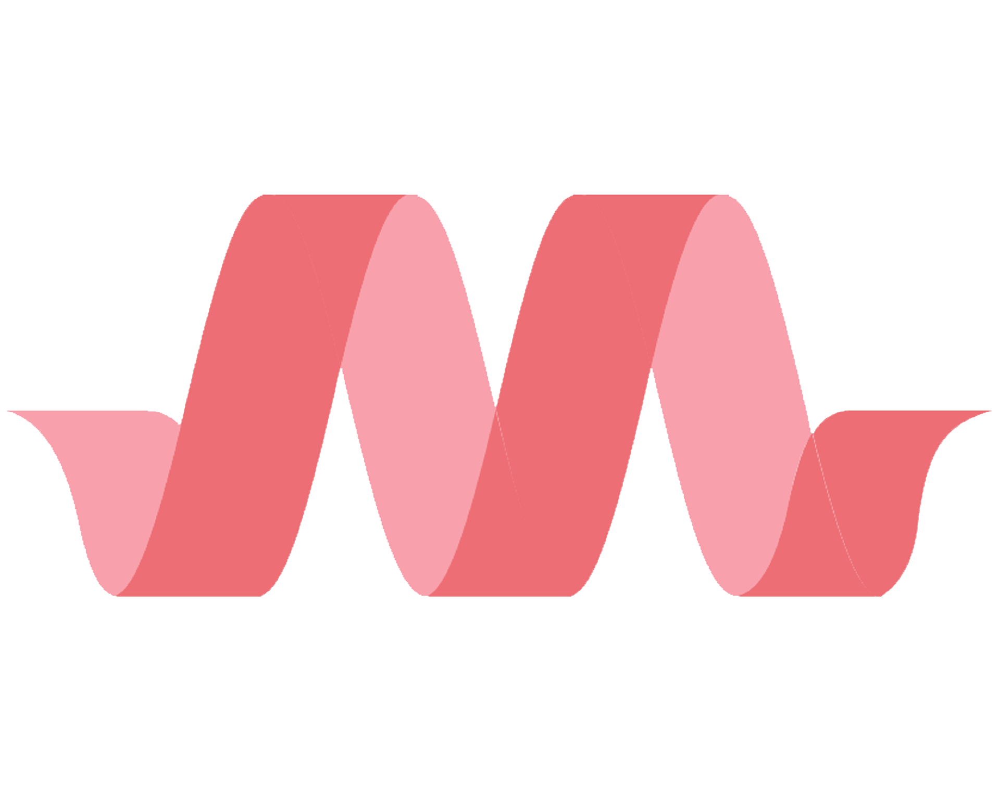
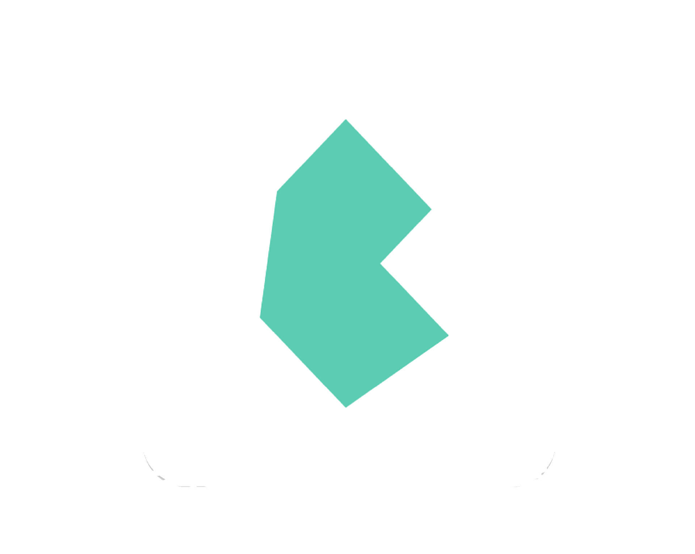
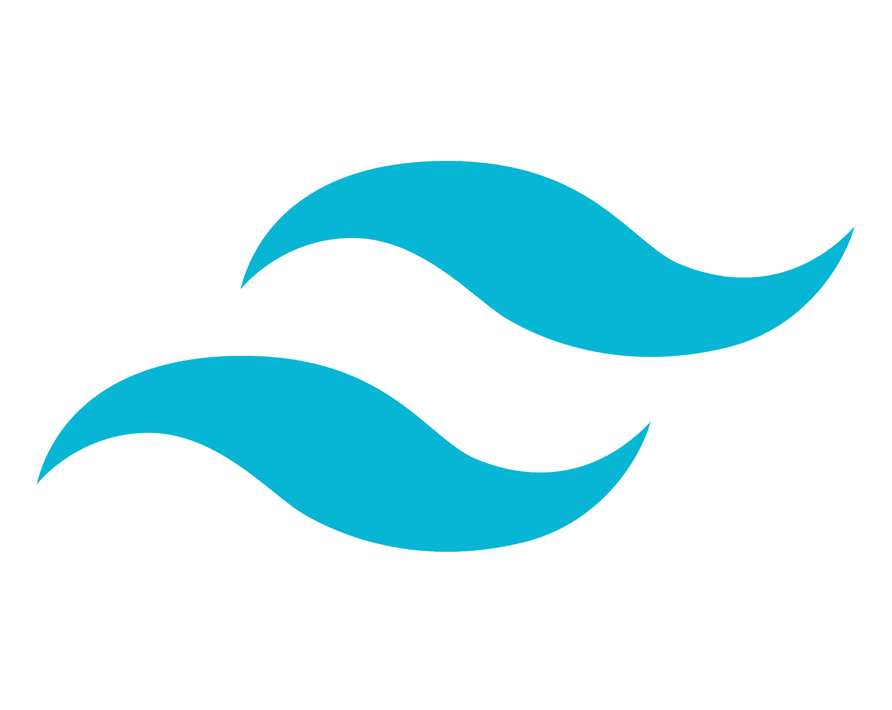

Es una biblioteca de estilos que son usados para implementar en diseños de paginas web, esto nos permite aplicar estilos de una forma mas agil y efiicaz. Unos de los frameworks mas usados actualmente son:

Bootstrap
Es una biblioteca multiplataforma o conjunto de herramientas de código abierto para diseño de sitios y aplicaciones web.
colaboradores de Wikipedia. (2021, 7 octubre). Bootstrap (framework). Wikipedia, la enciclopedia libre. https://es.wikipedia.org/wiki/Bootstrap_(framework)

Materialize CSS
Es un Framework para desarrolladores Frontend, que agiliza el trabajo para maquetar y crear vistas en un proyecto, este Framework trabaja bajo el concepto y diseño de Material Design de Google.
Colectiva, N. (2018, 1 agosto). Que es Materialize CSS y tus Primeros pasos con esta Herramienta. Blog Nube Colectiva. https://blog.nubecolectiva.com/que-es-materialize-css-y-tus-primeros-pasos-con-esta-herramienta/

Bulma
Es un framework CSS sencillo, moderno y elegante que muchos desarrolladores prefieren. Bulma tiene un mejor diseño por defecto, y parece más ligero.
Font, J. (2020, 11 julio). Aprende Bulma en 5 minutos - Javier Font. Medium. https://javifont.medium.com/aprende-bulma-en-5-minutos-3c919baaf41b

Tailwind CSS
Es un framework CSS que permite un desarrollo ágil, basado en clases de utilidad que se pueden aplicar con facilidad en el código HTML y unos flujos de desarrollo que permiten optimizar mucho el peso del código CSS.